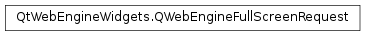

QWebEngineFullScreenRequest¶
Detailed Description¶
The
PySide2.QtWebEngineWidgets.QWebEngineFullScreenRequestclass enables accepting or rejecting requests for entering and exiting the fullscreen mode.To allow elements such as videos to be shown in the fullscreen mode, applications must set
QWebEngineSettings.FullScreenSupportEnabledand connect toQWebEnginePage.fullScreenRequested, which takes aPySide2.QtWebEngineWidgets.QWebEngineFullScreenRequestinstance as an argument.If an element of a web page requests to be shown in the fullscreen mode,
QWebEnginePage.fullScreenRequestedwill be emitted with anPySide2.QtWebEngineWidgets.QWebEngineFullScreenRequestinstance as an argument wherePySide2.QtWebEngineWidgets.QWebEngineFullScreenRequest.toggleOn()returnstrue. The signal handler needs to then either callPySide2.QtWebEngineWidgets.QWebEngineFullScreenRequest.accept()orPySide2.QtWebEngineWidgets.QWebEngineFullScreenRequest.reject().If the request to enter the fullscreen mode is accepted, the element requesting fullscreen mode will fill the viewport, but it is up to the application to make the view fullscreen or to move the page to a view that is in the fullscreen mode.
Likewise, a
QWebEnginePage.fullScreenRequestedwill be emitted when the user wants to leave the full screen mode (that is, through theQWebEnginePage.ExitFullScreencontext menu action). In this case,PySide2.QtWebEngineWidgets.QWebEngineFullScreenRequest.toggleOn()will returnfalse, and the signal handler again needs toPySide2.QtWebEngineWidgets.QWebEngineFullScreenRequest.accept()orPySide2.QtWebEngineWidgets.QWebEngineFullScreenRequest.reject()the request. If it is accepted, the applicaton needs to make sure that the global window state is restored.
-
PySide2.QtWebEngineWidgets.QWebEngineFullScreenRequest.accept()¶ Accepts the request to enter or exit the fullscreen mode.
-
PySide2.QtWebEngineWidgets.QWebEngineFullScreenRequest.origin()¶ Return type: PySide2.QtCore.QUrlReturns the URL to be opened in the fullscreen mode.
-
PySide2.QtWebEngineWidgets.QWebEngineFullScreenRequest.reject()¶ Rejects a request to enter or exit the fullscreen mode.
-
PySide2.QtWebEngineWidgets.QWebEngineFullScreenRequest.toggleOn()¶ Return type: PySide2.QtCore.boolReturns
trueif the web page has issued a request to enter the fullscreen mode, otherwise returnsfalse.
© 2018 The Qt Company Ltd. Documentation contributions included herein are the copyrights of their respective owners. The documentation provided herein is licensed under the terms of the GNU Free Documentation License version 1.3 as published by the Free Software Foundation. Qt and respective logos are trademarks of The Qt Company Ltd. in Finland and/or other countries worldwide. All other trademarks are property of their respective owners.